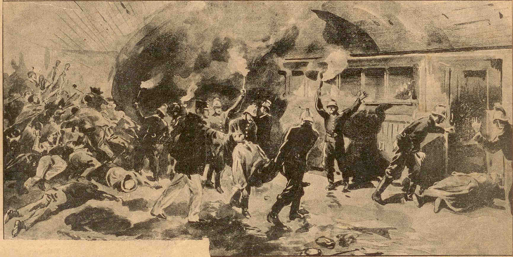

THE PARIS MÉTRO FIRE (COURONNES DISASTER)
On the evening of August 10, 1903, the relatively new Paris Métro experienced its first major catastrophe. It began during the evening rush hour on Line 2 Nord when a train pulled into the Barbès-Rochechouart station with heavy smoke pouring from its front motor. The train was evacuated, but instead of taking it out of service, the staff made a fatal decision: they attempted to push the empty, smoldering train toward the end of the line at Nation using the train immediately behind it. As the coupled trains moved through the narrow, unventilated tunnels, the short-circuit intensified, feeding a massive fire that eventually grew out of control.

The Fatal Altercation: A third train, packed with roughly 350 passengers, was following behind the burning empty trains. It was stopped at Couronnes station because the tunnel ahead was filled with smoke. The stationmaster ordered the passengers to evacuate to the street for their safety. However, many passengers—having already been transferred between trains twice due to the delays—became irate. A heated argument broke out on the platform as passengers demanded fare refunds before they would leave. This "stubbornness and folly" lasted for several critical minutes while the fire at the next station destroyed the electrical circuit, plunging Couronnes station into total darkness.
The Death Trap: Moments after the lights failed, a dense, choking cloud of black smoke from the burning wooden carriages in the tunnel billowed into the station. In the pitch-black, smoke-filled cavern, the exit was nearly impossible to find. Disoriented and suffocating, many passengers inadvertently wandered toward the end of the platform—away from the exit—where they were trapped against the tunnel wall. In less than a minute, the station became a tomb. Rescuers later found the majority of the victims piled near the end of the platform, having succumbed to asphyxia just feet from safety.
Key Facts
Date: August 10, 1903
Location: Couronnes Station, Paris, France
Casualties: 84 dead
Cause: A short-circuited motor on a wooden train, exacerbated by a disastrous decision to push the burning train through tunnels and a delay in evacuation caused by passengers demanding refunds.
The Couronnes disaster remains the deadliest accident in the history of the Paris Métro. It exposed the lethal vulnerability of early subway systems constructed with wooden cars and poor ventilation. The tragedy led to immediate, sweeping safety reforms: the rapid replacement of wooden train cars with all-metal ones, the implementation of emergency lighting circuits separate from the main power, and the creation of "multiple-unit" train control (which allowed motors to be isolated). These standards were eventually adopted by subway systems worldwide, fundamentally changing the design of modern underground transit.